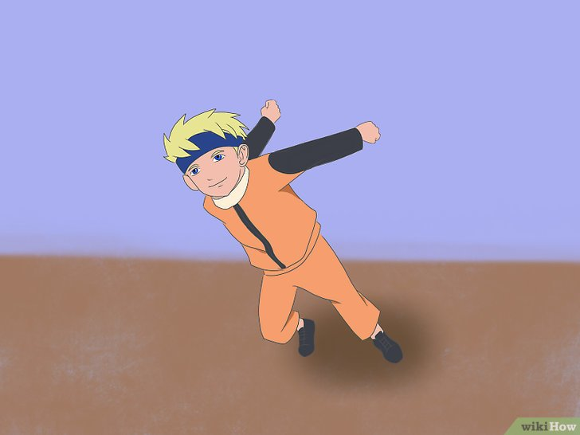

| 1 |
|
Kenakan pakaian yang nyaman sehingga Anda mudah bergerak. Cobalah
bertingkah laku seperti Naruto untuk mendalami karakternya, dan tirulah gaya berpakaiannya, jika
memungkinkan. Pastikan Anda mengenakan sepatu lari. Pilihlah tempat berlari yang datar tanpa
banyak
penghalang sehingga Anda tidak tersandung. |
| 2 |
 |
Perlu diingat bahwa cara berlari naruto bukanlah cara berlari yang benar dan
berisiko menyebabkan cedera. Orang biasanya berlari dengan kedua lengan dan kaki yang
terayun serempak sehingga tiap langkah menjadi semakin kuat. Sementara itu, dalam cerita naruto,
para karakter sering kali meluruskan tangan di belakang punggung untuk mengurangi hambatan
udara.
Mereka telah dilatih bertahun-tahun untuk memperkuat kedua kakinya sehingga mereka tidak
membutuhkan
tenaga ekstra dari gaya dorong. Anda bisa meniru gaya lari ini, tetapi tidak akan bisa sebaik
Naruto
karena di dalam cerita, ada kekuatan (yang dinamakan Chakra) yang bisa meningkatkan kekuatan
kaki
dan membuat cara berlari ini efektif. Untuk meniru penampilan cara lari ninja di Naruto, Anda
hanya
perlu mencondongkan badan ke depan dan meluruskan kedua tangan di belakang torso. |
| 3 |
|
Mulailah sikap bersedia. Melangkah ke depan dengan kaki kanan,
posisikan
kedua tangan lurus ke belakang, dan tekuk sedikit kedua lutut Anda. Lihat ke depan dan fokus
pada
arah tujuan. |
| 4 |
 |
Tekuk torso Anda ke depan, tetapi pertahankan punggung tetap lurus.
Tekuk
kedua lutut Anda dan miringkan seluruh torso ke depan. Secara teoretis, posisi ini akan
memperkecil
target lawan sehingga membuat Anda sulit diserang dari depan dengan senjata jarak jauh. Naikkan
kepala dengan menekuk leher sehingga Anda bisa melihat arah lari.
- Miringkan badan ke depan sebanyak 30-40 derajat. Jangan terlalu membungkuk karena Anda
bisa
terperosok ke depan.
- Bayangkan Anda berlari di suatu lomba dan akan merobek pita garis finis. Pita harus
disobek
dengan dada dan torso, bukan dengan lengan.
|
| 5 |
|
Tahan kedua lengan lurus di belakang punggung.
Pertahankan kedua tangan Anda tetap lurus, walaupun sulit. Balikkan kedua telapak tangan
sehingga
menghadap ke atas. Secara teoretis, posisi ini dapat mengurangi hambatan udara dan membantu Anda
berlari lebih cepat.
- Jangan mengayunkan atau menggerakkan lengan. Biarkan lengan tetap lentur sehingga Anda
bisa
berfokus pada kaki, tetapi tetap kokoh sehingga tidak terayun-ayun saat berlari. Jika
kedua
lengan ditegangkan, Anda bisa kehilangan konsentrasi.
- Coba biarkan kedua lengan berada di samping dan berlarilah. Jika Anda bisa menahan kedua
lengan tetap lemas dan berlari cukup cepat, mungkin lengan akan melayang secara alami di
belakang Anda.
|
| 6 |
|
Berlarilah dengan cepat.
Lakukan sprint ke depan dengan kedua lengan menggantung lemas di belakang Anda. Cara berlari
Naruto
dilakukan dengan otot kaki yang berbeda dengan cara berlari biasa sehingga awalnya memang agak
sulit. Teruslah berlatih untuk berlari lebih cepat. Cara lari ini juga lebih menghabiskan
stamina
sehingga jangan berlari terlalu lama di permulaan.
- Mulailah berlari secara normal dengan mencodongkan tubuh bagian atas agak ke depan dalam
kecepatan lambat. Lama-kelamaan, Anda bisa meningkatkan kecepatan dan membiarkan kedua
lengan melayang di belakang Anda.
|
| 7 |
|
Jaga keseimbangan tubuh. Saat berlari dengan gaya Naruto, satu langkah
salah saja akan membuat Anda melayang ke depan. Pastikan keseimbangan seluruh tubuh Anda. Tetap
naikkan kepala dan gunakan kedua lengan untuk menyeimbangkan tubuh saat condong ke depan. Selalu
lihat arah lari Anda dan usahakan agar tidak terjatuh. |